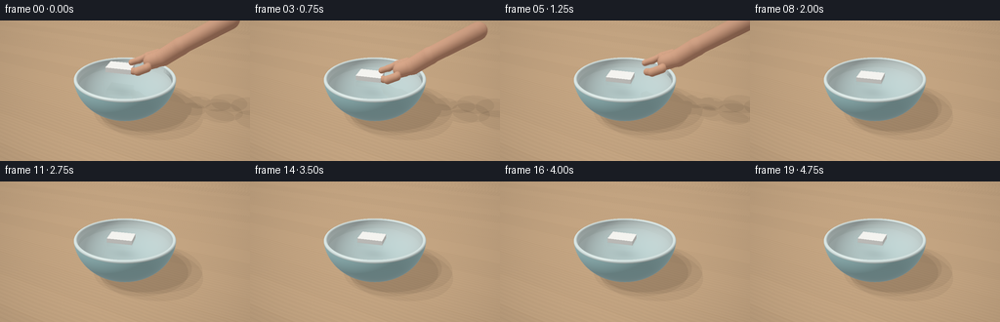
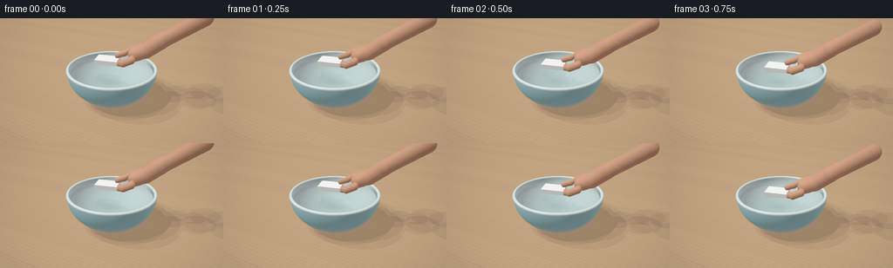
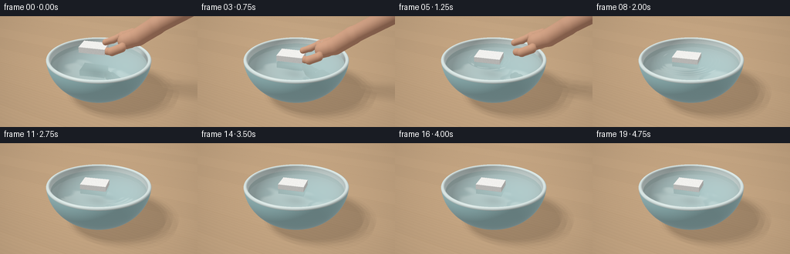
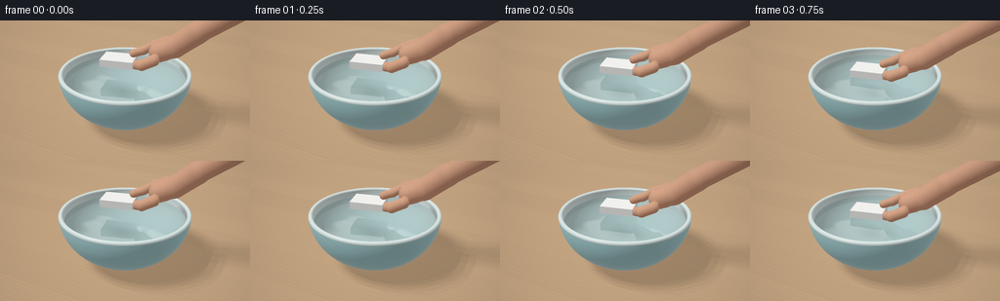

CODING AGENTS AS PIXEL WORLD MODELS
traex/GPT-6.1-Sol · mechanics_0014
点击播放 · 原生 RGB 像素
逐轮保存的候选
回放视频、检查图与代码变化。
每份候选均可单独播放。实际图片检查记录在下方工具轨迹中。
候选 01播放与检查图
点击播放 · 原生 RGB 像素


展开代码变化
--- 上一保存版本
+++ 本次保存版本
@@ -0,0 +1,398 @@
+"""Procedural RGB tabletop video. Pure numpy ray geometry and PIL sampling."""
+from pathlib import Path
+import json
+import numpy as np
+from PIL import Image
+import artifact_io
+
+ROOT=Path(__file__).resolve().parent
+SPEC=json.loads((ROOT/'task_spec.json').read_text())
+W,H=SPEC['width'],SPEC['height']
+S=3
+WW,HH=W*S,H*S
+DT=np.float32
+
+def unit(v):
+ return v / np.maximum(np.linalg.norm(v,axis=-1,keepdims=True),1e-9)
+def smoothstep(a,b,x):
+ q=np.clip((x-a)/(b-a),0,1); return q*q*(3-2*q)
+def rot_y(a):
+ c,s=np.cos(a),np.sin(a)
+ return np.array([[c,0,s],[0,1,0],[-s,0,c]],dtype=DT)
+
+CAM=np.array([3.3,4.85,6.7],dtype=DT)
+TARGET=np.array([0,.85,0],dtype=DT)
+FWD=unit(TARGET-CAM); RIGHT=unit(np.cross(FWD,[0,1,0])); UP=unit(np.cross(RIGHT,FWD))
+x,y=np.meshgrid((np.arange(WW)+.5-WW/2)/WW,(HH/2-np.arange(HH)-.5)/WW)
+DIR=unit(FWD+x[...,None]*1.03*RIGHT+y[...,None]*1.03*UP).reshape(-1,3).astype(DT)
+ORIG=np.broadcast_to(CAM,DIR.shape)
+LIGHT=unit(np.array([-3.2,6.5,3.4],dtype=DT))
+BC=np.array([0,1.42,0],dtype=DT)
+BO=np.array([1.7,1.42,1.7],dtype=DT)
+BI=np.array([1.59,1.31,1.59],dtype=DT)
+WATER=1.245
+WR=1.59*np.sqrt(1-((WATER-1.42)/1.31)**2)
+
+# A stable fine, non-learned grain field, to give the foam real cellular structure.
+rng=np.random.default_rng(10)
+foamtex=rng.random((384,512)).astype(DT)
+from PIL import ImageFilter
+coarse=np.array(Image.fromarray((foamtex*255).astype('uint8')).filter(ImageFilter.GaussianBlur(2.5))).astype(DT)/255
+foamtex=(foamtex-.5)*.35+(coarse-.5)*1.1
+
+
+def ellipsoid(o,d,c,axes,lo=-np.inf,hi=np.inf):
+ oc=(o-c)/axes; dd=d/axes
+ A=np.sum(dd*dd,axis=1); B=np.sum(oc*dd,axis=1); C=np.sum(oc*oc,axis=1)-1
+ dis=B*B-A*C
+ q=np.sqrt(np.maximum(dis,0))
+ ta=(-B-q)/A; tb=(-B+q)/A
+ ya=o[:,1]+ta*d[:,1]; yb=o[:,1]+tb*d[:,1]
+ va=(dis>=0)&(ta>1e-4)&(ya>=lo)&(ya<=hi)
+ vb=(dis>=0)&(tb>1e-4)&(yb>=lo)&(yb<=hi)
+ t=np.where(va,ta,np.where(vb,tb,1e6))
+ p=o+np.minimum(t,1000)[:,None]*d
+ n=unit((p-c)/(axes*axes))
+ return t,n
+
+
+def slab(o,d,center,R,half):
+ oo=(o-center)@R; dd=d@R
+ safe=np.where(np.abs(dd)>1e-8,dd,1e-8)
+ a=(-half-oo)/safe; b=(half-oo)/safe
+ low=np.minimum(a,b); high=np.maximum(a,b)
+ tn=np.max(low,axis=1); tf=np.min(high,axis=1)
+ t=np.where((tf>=np.maximum(tn,0))&(tf>0),np.where(tn>1e-4,tn,tf),1e6)
+ p=oo+np.minimum(t,1000)[:,None]*dd
+ ii=np.argmax(np.abs(p/half),axis=1)
+ n=np.zeros_like(p); n[np.arange(len(n)),ii]=np.sign(p[np.arange(len(n)),ii])
+ return t,n@R.T,p,ii
+
+
+def capsule_distance(p,a,b,r):
+ pa=p-a; ba=b-a
+ h=np.clip(np.sum(pa*ba,axis=1)/np.dot(ba,ba),0,1)
+ return np.linalg.norm(pa-h[:,None]*ba,axis=1)-r
+
+
+def hand_sdf(p,hand):
+ val=np.ones(len(p),dtype=DT)*100
+ for a,b,r in hand:
+ cur=capsule_distance(p,a,b,r)
+ k=.045
+ h=np.maximum(k-np.abs(val-cur),0)/k
+ val=np.minimum(val,cur)-h*h*k*.25
+ return val
+
+
+def hand_intersect(o,d,hand):
+ if not hand: return np.full(len(d),1e6,dtype=DT),np.zeros_like(d)
+ mi=np.min(np.array([a-r-.06 for a,b,r in hand]+[b-r-.06 for a,b,r in hand]),axis=0)
+ ma=np.max(np.array([a+r+.06 for a,b,r in hand]+[b+r+.06 for a,b,r in hand]),axis=0)
+ safe=np.where(np.abs(d)>1e-8,d,1e-8)
+ aa=(mi-o)/safe; bb=(ma-o)/safe
+ enter=np.maximum(np.max(np.minimum(aa,bb),axis=1),.001)
+ exit=np.min(np.maximum(aa,bb),axis=1)
+ valid=exit>enter
+ ids=np.where(valid)[0]
+ result=np.ones(len(d),dtype=DT)*1e6; normal=np.zeros_like(d)
+ oo=o[ids]; dd=d[ids]; dist=enter[ids].copy(); ex=exit[ids]
+ active=np.ones(len(ids),bool); got=np.zeros(len(ids),bool)
+ for k in range(48):
+ jj=np.where(active)[0]
+ if not len(jj): break
+ v=hand_sdf(oo[jj]+dd[jj]*dist[jj,None],hand)
+ hit=v<.0012
+ got[jj[hit]]=True
+ dist[jj[~hit]]+=np.maximum(v[~hit]*.85,.001)
+ active[jj[hit]]=False
+ active &= dist<=ex
+ jj=np.where(got)[0]
+ ix=ids[jj]; pp=o[ix]+d[ix]*dist[jj,None]
+ result[ix]=dist[jj]
+ e=.002
+ for a in range(3):
+ off=np.zeros(3,dtype=DT); off[a]=e
+ normal[ix,a]=hand_sdf(pp+off,hand)-hand_sdf(pp-off,hand)
+ normal[ix]=unit(normal[ix])
+ return result,normal
+
+
+def ring(o,d):
+ # Rounded ceramic lip: sphere tracing a torus of revolution.
+ # Limit work to its tightly bounded horizontal slab.
+ safe=np.where(np.abs(d[:,1])>1e-7,d[:,1],1e-7)
+ a=(1.34-o[:,1])/safe; b=(1.47-o[:,1])/safe
+ enter=np.maximum(np.minimum(a,b),.001); exit=np.maximum(a,b)
+ p=o+enter[:,None]*d
+ ids=np.where((exit>enter)&(np.linalg.norm(p[:,[0,2]],axis=1)<1.86))[0]
+ out=np.ones(len(d),dtype=DT)*1e6; n=np.zeros_like(d)
+ t=enter[ids].copy(); ex=exit[ids]; active=np.ones(len(ids),bool); hit=np.zeros(len(ids),bool)
+ for k in range(35):
+ j=np.where(active)[0]
+ if not len(j): break
+ p=o[ids[j]]+t[j,None]*d[ids[j]]
+ r=np.linalg.norm(p[:,[0,2]],axis=1)
+ q=np.stack((r-1.645,p[:,1]-1.405),axis=1)
+ ds=np.linalg.norm(q,axis=1)-.057
+ h=ds<.00065
+ hit[j[h]]=True; active[j[h]]=False
+ t[j[~h]]+=np.maximum(ds[~h]*.85,.001)
+ active &= t<ex
+ j=np.where(hit)[0]; i=ids[j]; p=o[i]+t[j,None]*d[i]
+ out[i]=t[j]
+ r=np.linalg.norm(p[:,[0,2]],axis=1)
+ n[i]=unit(np.stack((p[:,0]*(1-1.645/r),p[:,1]-1.405,p[:,2]*(1-1.645/r)),axis=1))
+ return out,n
+
+
+def scene(o,d,state,include_water=True,include_hand=True,torus=True):
+ count=len(d)
+ T=np.ones(count,dtype=DT)*1e6; N=np.zeros_like(d); M=np.zeros(count,dtype=np.int8)
+ def merge(t,n,m):
+ hit=t<T
+ T[hit]=t[hit]; N[hit]=n[hit]; M[hit]=m
+ # Table plane.
+ t=-o[:,1]/np.where(np.abs(d[:,1])>1e-8,d[:,1],1e-8)
+ merge(np.where(t>1e-4,t,1e6),np.tile([0,1,0],(count,1)),1)
+ t,n=ellipsoid(o,d,BC,BO,.06,1.405); merge(t,n,2)
+ t,n=ellipsoid(o,d,BC,BI,.11,1.405); merge(t,-n,3)
+ if torus:
+ t,n=ring(o,d); merge(t,n,4)
+ if include_water:
+ t=(WATER-o[:,1])/np.where(np.abs(d[:,1])>1e-8,d[:,1],1e-8)
+ p=o+np.minimum(t,1000)[:,None]*d
+ ok=(t>1e-4)&(p[:,0]*p[:,0]+p[:,2]*p[:,2]<WR*WR)
+ merge(np.where(ok,t,1e6),np.tile([0,1,0],(count,1)),5)
+ t,n,_,_=slab(o,d,state['fc'],state['R'],state['half']); merge(t,n,6)
+ if include_hand and state['hand']:
+ t,n=hand_intersect(o,d,state['hand']); merge(t,n,7)
+ return T,N,M
+
+
+def env(d):
+ # Broad daylight, reflected luminous window panes, warm room outside them.
+ c=np.tile(np.array([.61,.66,.68],dtype=DT),(len(d),1))
+ sky=smoothstep(-.15,.8,d[:,1])
+ c=c*(1-sky[:,None])+np.array([.78,.85,.90])*sky[:,None]
+ # A rectangular soft-box/window, with dark slim mullions.
+ u=d[:,0]/np.maximum(d[:,1],.001)
+ v=d[:,2]/np.maximum(d[:,1],.001)
+ win=(smoothstep(-1.25,-1.14,u)*(1-smoothstep(-.22,-.12,u))*smoothstep(.0,.07,v)*(1-smoothstep(.95,1.02,v)))*(d[:,1]>0)
+ mullion=(1-.65*np.exp(-((u+.68)/.02)**4))*(1-.55*np.exp(-((v-.49)/.018)**4))
+ c+=win[:,None]*mullion[:,None]*np.array([1.65,1.63,1.53])
+ return c
+
+
+def materials(p,n,d,m,state):
+ count=len(p); base=np.zeros((count,3),dtype=DT)
+ rough=np.ones(count,dtype=DT)*.3
+ ids=np.where(m==1)[0]
+ q=p[ids]
+ # Warm natural wood, small pores and slightly different plank tones.
+ xx=q[:,0]+.25*q[:,2]
+ zz=q[:,2]
+ grain=np.sin(zz*48+.6*np.sin(xx*1.9)+1.2*np.sin(zz*6+xx*.3))
+ grain2=np.sin(zz*121+2*np.sin(zz*13)+xx*.7)
+ g=.026*grain+.013*grain2+.011*np.sin(zz*415+xx*3)
+ seam=np.exp(-(np.sin((zz+.3)*np.pi/1.18)/.008)**2)
+ plank=.018*np.sin(np.floor((zz+.3)/1.18)*3.82)
+ base[ids]=np.array([.55,.368,.217])*(1+g[:,None]+plank[:,None])-.065*seam[:,None]
+ rough[ids]=.52
+ ids=np.where(m==2)[0]; q=p[ids]
+ # Thin translucent mint glaze over stoneware.
+ tex=.004*np.sin(q[:,0]*121+q[:,1]*73)*np.sin(q[:,2]*116-q[:,1]*38)
+ base[ids]=np.array([.37,.62,.63])+tex[:,None]
+ rough[ids]=.17
+ ids=np.where((m==3)|(m==4))[0]; q=p[ids]
+ base[ids]=np.array([.70,.81,.79])+.003*(np.sin(q[:,0]*167)*np.sin(q[:,2]*189))[:,None]
+ rough[ids]=.13
+ ids=np.where(m==6)[0]
+ if len(ids):
+ local=(p[ids]-state['fc'])@state['R']
+ face=np.argmax(np.abs(local/state['half']),axis=1)
+ u=np.where(face==0,local[:,2],local[:,0]); v=np.where(face==1,local[:,2],local[:,1])
+ ix=np.mod(np.floor((u+1)*780).astype(int),foamtex.shape[1])
+ iy=np.mod(np.floor((v+1)*780).astype(int),foamtex.shape[0])
+ tex=foamtex[iy,ix]
+ # Closed cells, fine pale boundaries and occasional recessed bead joins.
+ uu=u*95+2*np.sin(v*47); vv=v*109+1.7*np.sin(u*23)
+ cells=(np.cos(uu)*np.cos(vv))
+ pits=np.maximum(cells-.72,0)*.09
+ base[ids]=np.array([.935,.93,.894])+(tex*.105-pits)[:,None]
+ rough[ids]=.9
+ ids=np.where(m==7)[0]; q=p[ids]
+ if len(ids):
+ noise=np.sin(q[:,0]*370+q[:,2]*272)*np.sin(q[:,1]*291)*.012
+ base[ids]=np.array([.67,.365,.235])+noise[:,None]
+ rough[ids]=.65
+ return np.clip(base,0,1),rough
+
+
+def shadow(p,n,state,where):
+ # Soft area-light occlusion evaluated from geometric objects.
+ result=np.ones(len(p),dtype=DT)
+ ids=np.where(where)[0]
+ if not len(ids): return result
+ oo=p[ids]+n[ids]*.004
+ sh=np.zeros(len(ids),dtype=DT)
+ for off in [(-.16,0,-.10),(.15,0,-.08),(-.10,0,.15),(.12,0,.12)]:
+ ld=unit(LIGHT+np.array(off))
+ dd=np.broadcast_to(ld,oo.shape)
+ t,nn=ellipsoid(oo,dd,BC,BO,.06,1.405)
+ tf,_,_,_=slab(oo,dd,state['fc'],state['R'],state['half'])
+ hit=(t<1e5)|(tf<1e5)
+ if state['hand']:
+ # Smooth bounding capsules approximate the soft hand shadow.
+ for a,b,r in state['hand']:
+ c=(a+b)*.5; ax=np.array([r+np.linalg.norm(b-a)*.25]*3)
+ tt,_=ellipsoid(oo,dd,c,ax)
+ hit|=(tt<1e5)
+ sh+=hit*.25
+ result[ids]=1-sh*.75
+ return result
+
+
+def shade(o,d,t,n,m,state,secondary=False):
+ p=o+np.minimum(t,1000)[:,None]*d
+ base,rough=materials(p,n,d,m,state)
+ # Diffuse skylight, key window and gentle fill, in linear radiance.
+ ndl=np.maximum(n@LIGHT,0)
+ fill=np.maximum(n@unit(np.array([3,2,-3],dtype=DT)),0)
+ amb=.36+.18*np.clip(n[:,1],0,1)
+ vis=shadow(p,n,state,(m==1)|(m==5)|(m==3)) if not secondary else np.ones(len(d),dtype=DT)
+ diff=amb+ndl*.76*vis+.16*fill
+ c=base*diff[:,None]
+ h=unit(LIGHT-d)
+ spec=np.maximum(np.sum(n*h,axis=1),0)
+ exponent=np.where(rough<.3,100,18)
+ inten=np.where(rough<.3,.24,.017)
+ c+=((spec**exponent)*inten*vis)[:,None]*np.array([1,.96,.85])
+ # Glaze softly reflects the room.
+ glossy=(m==2)|(m==3)|(m==4)
+ rr=d-2*np.sum(d*n,axis=1)[:,None]*n
+ ev=env(rr)
+ fres=(1-np.maximum(-np.sum(n*d,axis=1),0))**5
+ f=(.045+.21*fres)*glossy
+ c=c*(1-f[:,None])+ev*f[:,None]
+ ids=np.where(m==7)[0]
+ if len(ids):
+ # Back-light through skin adds the warm soft edge of a real fingertip.
+ c[ids]+=np.array([.055,.014,.005])*(1-np.maximum(n[ids]@LIGHT,0))[:,None]
+ c[m==0]=env(d[m==0])
+ return c,p
+
+
+def state_at(t):
+ placement=smoothstep(0,1.0,t)
+ floating=t>=1.0
+ bob=(.012*np.sin((t-1)*5.0)*np.exp(-(t-1)*.9)) if floating else 0
+ drift=.08*smoothstep(1,4.75,t)
+ fc=np.array([-.20+drift, WATER+.068+(1-placement)*.35+bob,-.05],dtype=DT)
+ theta=.20+.025*np.sin(max(t-1,0)*1.3)
+ tilt=(.025*np.sin(max(t-1,0)*4.5)*np.exp(-max(t-1,0)))
+ R=rot_y(theta)@np.array([[1,0,0],[0,np.cos(tilt),-np.sin(tilt)],[0,np.sin(tilt),np.cos(tilt)]],dtype=DT)
+ half=np.array([.43,.082,.30],dtype=DT)
+ hand=[]
+ retreat=smoothstep(1.0,2.0,t)
+ if t<2.0:
+ # Index finger and thumb pinch the right edge of the light foam slab.
+ # The rest of the hand extends out of the upper-right image.
+ shift=np.array([retreat*2.8,retreat*2.3,-retreat*.7],dtype=DT)
+ origin=fc+shift
+ def point(x,y,z): return origin+R@np.array([x,y,z],dtype=DT)
+ segments=[
+ ((.36,.18,-.13),(.59,.25,-.22),.105),
+ ((.59,.25,-.22),(.88,.42,-.26),.108),
+ ((.88,.42,-.26),(1.21,.57,-.23),.115),
+ ((.49,-.005,.16),(.68,.09,.36),.118),
+ ((.68,.09,.36),(.98,.27,.43),.135),
+ ((1.05,.37,.1),(1.42,.55,.12),.25),
+ ((1.42,.55,.12),(1.9,.95,.18),.27),
+ ((1.9,.95,.18),(3.1,1.8,.28),.25),
+ # A glimpse of curled remaining fingers beyond the pinch.
+ ((.89,.45,-.08),(1.07,.27,-.02),.115),
+ ((1.10,.53,-.05),(1.22,.29,.08),.12),
+ ]
+ for a,b,r in segments:
+ hand.append((point(*a),point(*b),r))
+ return dict(fc=fc,R=R,half=half,hand=hand,time=t)
+
+
+def water_shade(o,d,p,state):
+ # Very small long waves plus expanding capillary rings at placement.
+ xx=p[:,0]; zz=p[:,2]; time=state['time']
+ dx=.004*np.sin(5*xx+3*zz-time*1.2)+.0018*np.cos(11*zz-2*xx+time*.8)
+ dz=.003*np.sin(5*xx+3*zz-time*1.2)+.003*np.cos(11*zz-2*xx+time*.8)
+ rx=xx-state['fc'][0]; rz=zz-state['fc'][2]
+ rad=np.maximum(np.sqrt(rx*rx+rz*rz),.001)
+ if time>=.6:
+ tt=time-.8
+ wave=np.zeros(len(p),dtype=DT)
+ for offset in [0,.20,.44]:
+ target=.44+(tt-offset)*.54
+ if target>.28:
+ envelope=np.exp(-((rad-target)/.085)**2)*np.exp(-max(tt,0)*.52)
+ wave+=.022*envelope*np.cos((rad-target)*35)
+ dx+=wave*rx/rad; dz+=wave*rz/rad
+ n=unit(np.stack((-dx,np.ones(len(p)),-dz),axis=1))
+ cos=np.maximum(-np.sum(d*n,axis=1),0)
+ reflect=unit(d+2*cos[:,None]*n)
+ rt,rn,rm=scene(p+n*.003,reflect,state,include_water=False,include_hand=True)
+ rc,_=shade(p+n*.003,reflect,rt,rn,rm,state,secondary=True)
+ # Refraction reveals the glazed curved inner bowl and tinted depth.
+ eta=1/1.333
+ refr=unit(eta*d+(eta*cos-np.sqrt(np.maximum(1-eta*eta*(1-cos*cos),0)))[:,None]*n)
+ bt,bn=ellipsoid(p-n*.002,refr,BC,BI,.11,1.405)
+ bp=p-n*.002+np.minimum(bt,4)[:,None]*refr
+ base=np.tile([.68,.79,.77],(len(p),1))
+ diffuse=.50+.59*np.maximum(bn*-1@LIGHT,0)
+ bc=base*diffuse[:,None]
+ depth=np.maximum(WATER-bp[:,1],0)
+ attenuation=np.exp(-depth[:,None]*np.array([.20,.083,.056]))
+ bc=bc*attenuation+np.array([.20,.48,.48])*(1-attenuation)
+ # Contact shadow beneath the floating styrofoam, filtered by the water.
+ center=state['fc']; delta=bp-center
+ sh=np.exp(-((delta[:,0]-.10)**2/.23+(delta[:,2]+.04)**2/.12))* .17
+ bc*=1-sh[:,None]
+ fres=.022+.978*(1-cos)**5
+ c=bc*(1-fres[:,None])+rc*fres[:,None]
+ # Window's much broader specular reflection exposes otherwise invisible ripples.
+ lightmirror=unit(np.array([-.50,.86,.32]))
+ align=np.maximum(reflect@lightmirror,0)
+ c+=.23*(align**110)[:,None]*np.array([1,.97,.85])
+ # Dark wet meniscus around the foam, only once it rests on the water.
+ if time>.8:
+ local=(p-center)@state['R']
+ q=np.abs(local[:,[0,2]])-state['half'][[0,2]]
+ dist=np.linalg.norm(np.maximum(q,0),axis=1)+np.minimum(np.maximum(q[:,0],q[:,1]),0)
+ edge=np.exp(-(dist/.018)**2)*.11
+ c*=1-edge[:,None]
+ return c
+
+
+def frame(i):
+ state=state_at(i/SPEC['fps'])
+ t,n,m=scene(ORIG,DIR,state)
+ c,p=shade(ORIG,DIR,t,n,m,state)
+ ids=np.where(m==5)[0]
+ if len(ids): c[ids]=water_shade(ORIG[ids],DIR[ids],p[ids],state)
+ # Subtle photographic contrast and a natural sRGB-like response.
+ c=np.clip(c,0,2)
+ c=c/(1+c*.22)
+ c=np.clip(c,0,1)**(1/2.05)
+ # Gentle vignette; no camera motion, so the physical event is easy to follow.
+ v=1-.11*((x/.65)**2+(y/.60)**2)
+ c=c.reshape(HH,WW,3)*v[:,:,None]
+ out=Image.fromarray(np.uint8(np.clip(c*255+.5,0,255)))
+ return np.asarray(out.resize((W,H),Image.Resampling.LANCZOS))
+
+
+def main():
+ frames=[]
+ for i in range(SPEC['frames']):
+ frames.append(frame(i))
+ print('Rendered',i,flush=True)
+ artifact_io.save(np.stack(frames),ROOT)
+
+if __name__=='__main__': main()
候选 02播放与检查图
点击播放 · 原生 RGB 像素


展开代码变化
--- 上一保存版本
+++ 本次保存版本
@@ -24,7 +24,7 @@
TARGET=np.array([0,.85,0],dtype=DT)
FWD=unit(TARGET-CAM); RIGHT=unit(np.cross(FWD,[0,1,0])); UP=unit(np.cross(RIGHT,FWD))
x,y=np.meshgrid((np.arange(WW)+.5-WW/2)/WW,(HH/2-np.arange(HH)-.5)/WW)
-DIR=unit(FWD+x[...,None]*1.03*RIGHT+y[...,None]*1.03*UP).reshape(-1,3).astype(DT)
+DIR=unit(FWD+x[...,None]*.79*RIGHT+y[...,None]*.79*UP).reshape(-1,3).astype(DT)
ORIG=np.broadcast_to(CAM,DIR.shape)
LIGHT=unit(np.array([-3.2,6.5,3.4],dtype=DT))
BC=np.array([0,1.42,0],dtype=DT)
@@ -167,6 +167,9 @@
t,n,_,_=slab(o,d,state['fc'],state['R'],state['half']); merge(t,n,6)
if include_hand and state['hand']:
t,n=hand_intersect(o,d,state['hand']); merge(t,n,7)
+ for nc,ax in state['nails']:
+ tt,nn=ellipsoid((o-nc)@state['R'],d@state['R'],np.zeros(3),ax)
+ merge(tt,nn@state['R'].T,8)
return T,N,M
@@ -178,8 +181,8 @@
# A rectangular soft-box/window, with dark slim mullions.
u=d[:,0]/np.maximum(d[:,1],.001)
v=d[:,2]/np.maximum(d[:,1],.001)
- win=(smoothstep(-1.25,-1.14,u)*(1-smoothstep(-.22,-.12,u))*smoothstep(.0,.07,v)*(1-smoothstep(.95,1.02,v)))*(d[:,1]>0)
- mullion=(1-.65*np.exp(-((u+.68)/.02)**4))*(1-.55*np.exp(-((v-.49)/.018)**4))
+ win=(smoothstep(-1.13,-1.05,u)*(1-smoothstep(-.20,-.14,u))*smoothstep(-1.8,-1.69,v)*(1-smoothstep(-.52,-.43,v)))*(d[:,1]>0)
+ mullion=(1-.65*np.exp(-((u+.68)/.02)**4))*(1-.55*np.exp(-((v+1.10)/.025)**4))
c+=win[:,None]*mullion[:,None]*np.array([1.65,1.63,1.53])
return c
@@ -194,7 +197,7 @@
zz=q[:,2]
grain=np.sin(zz*48+.6*np.sin(xx*1.9)+1.2*np.sin(zz*6+xx*.3))
grain2=np.sin(zz*121+2*np.sin(zz*13)+xx*.7)
- g=.026*grain+.013*grain2+.011*np.sin(zz*415+xx*3)
+ g=.015*grain+.005*grain2+.0015*np.sin(zz*415+xx*3)
seam=np.exp(-(np.sin((zz+.3)*np.pi/1.18)/.008)**2)
plank=.018*np.sin(np.floor((zz+.3)/1.18)*3.82)
base[ids]=np.array([.55,.368,.217])*(1+g[:,None]+plank[:,None])-.065*seam[:,None]
@@ -219,13 +222,32 @@
uu=u*95+2*np.sin(v*47); vv=v*109+1.7*np.sin(u*23)
cells=(np.cos(uu)*np.cos(vv))
pits=np.maximum(cells-.72,0)*.09
- base[ids]=np.array([.935,.93,.894])+(tex*.105-pits)[:,None]
+ # Jittered packed white polystyrene beads, with porous joins.
+ uu=u/.037; vv=v/.037
+ ux=np.floor(uu); vy=np.floor(vv)
+ best=np.full(len(u),1e6); bx=np.zeros(len(u)); by=np.zeros(len(u))
+ for j in [-1,0,1]:
+ for k in [-1,0,1]:
+ gx=ux+j; gy=vy+k
+ jx=np.mod(np.sin(gx*127.1+gy*311.7)*43758.5,1)*.50+.25
+ jy=np.mod(np.sin(gx*269.5+gy*183.3)*43758.5,1)*.50+.25
+ dx=uu-gx-jx; dy=vv-gy-jy
+ ds=dx*dx+dy*dy
+ choose=ds<best
+ best=np.minimum(best,ds); bx=np.where(choose,dx,bx); by=np.where(choose,dy,by)
+ bead=np.sqrt(best)
+ boundary=smoothstep(.40,.58,bead)
+ dome=.030*(-bx+by)-boundary*.075
+ base[ids]=np.array([.935,.93,.904])+(tex*.065+dome)[:,None]
rough[ids]=.9
ids=np.where(m==7)[0]; q=p[ids]
if len(ids):
noise=np.sin(q[:,0]*370+q[:,2]*272)*np.sin(q[:,1]*291)*.012
base[ids]=np.array([.67,.365,.235])+noise[:,None]
rough[ids]=.65
+ ids=np.where(m==8)[0]
+ base[ids]=np.array([.74,.49,.39])
+ rough[ids]=.24
return np.clip(base,0,1),rough
@@ -236,19 +258,28 @@
if not len(ids): return result
oo=p[ids]+n[ids]*.004
sh=np.zeros(len(ids),dtype=DT)
- for off in [(-.16,0,-.10),(.15,0,-.08),(-.10,0,.15),(.12,0,.12)]:
+ for off in [(a,0,b) for a in [-.12,0,.12] for b in [-.12,0,.12]]:
ld=unit(LIGHT+np.array(off))
dd=np.broadcast_to(ld,oo.shape)
t,nn=ellipsoid(oo,dd,BC,BO,.06,1.405)
tf,_,_,_=slab(oo,dd,state['fc'],state['R'],state['half'])
hit=(t<1e5)|(tf<1e5)
+ soft=hit.astype(DT)
if state['hand']:
- # Smooth bounding capsules approximate the soft hand shadow.
+ # The continuous projected capsule skeleton gives smooth shadows,
+ # rather than isolated round approximations for the finger bones.
for a,b,r in state['hand']:
- c=(a+b)*.5; ax=np.array([r+np.linalg.norm(b-a)*.25]*3)
- tt,_=ellipsoid(oo,dd,c,ax)
- hit|=(tt<1e5)
- sh+=hit*.25
+ ba=b-a; q=oo-a
+ bd=np.dot(ba,ld); bl=np.dot(ba,ba)
+ qd=q@ld; qb=q@ba
+ ray=(bd*qb-bl*qd)/max(bl-bd*bd,1e-6)
+ h=np.clip((qb+ray*bd)/bl,0,1)
+ cp=a+h[:,None]*ba
+ ray=np.maximum((cp-oo)@ld,0)
+ dst=np.linalg.norm(oo+ray[:,None]*ld-cp,axis=1)
+ pen=.045+.012*ray
+ soft=np.maximum(soft,1-smoothstep(r-pen,r+pen,dst))
+ sh+=soft/9
result[ids]=1-sh*.75
return result
@@ -288,12 +319,12 @@
floating=t>=1.0
bob=(.012*np.sin((t-1)*5.0)*np.exp(-(t-1)*.9)) if floating else 0
drift=.08*smoothstep(1,4.75,t)
- fc=np.array([-.20+drift, WATER+.068+(1-placement)*.35+bob,-.05],dtype=DT)
+ fc=np.array([-.20+drift, WATER+.075+(1-placement)*.35+bob,-.05],dtype=DT)
theta=.20+.025*np.sin(max(t-1,0)*1.3)
tilt=(.025*np.sin(max(t-1,0)*4.5)*np.exp(-max(t-1,0)))
R=rot_y(theta)@np.array([[1,0,0],[0,np.cos(tilt),-np.sin(tilt)],[0,np.sin(tilt),np.cos(tilt)]],dtype=DT)
- half=np.array([.43,.082,.30],dtype=DT)
- hand=[]
+ half=np.array([.43,.095,.30],dtype=DT)
+ hand=[]; nails=[]
retreat=smoothstep(1.0,2.0,t)
if t<2.0:
# Index finger and thumb pinch the right edge of the light foam slab.
@@ -316,7 +347,9 @@
]
for a,b,r in segments:
hand.append((point(*a),point(*b),r))
- return dict(fc=fc,R=R,half=half,hand=hand,time=t)
+ nails=[(point(.38,.253,-.12),np.array([.078,.016,.057])),
+ (point(.515,.019,.268),np.array([.064,.049,.016]))]
+ return dict(fc=fc,R=R,half=half,hand=hand,nails=nails,time=t)
def water_shade(o,d,p,state):
@@ -333,7 +366,7 @@
target=.44+(tt-offset)*.54
if target>.28:
envelope=np.exp(-((rad-target)/.085)**2)*np.exp(-max(tt,0)*.52)
- wave+=.022*envelope*np.cos((rad-target)*35)
+ wave+=.038*envelope*np.cos((rad-target)*35)
dx+=wave*rx/rad; dz+=wave*rz/rad
n=unit(np.stack((-dx,np.ones(len(p)),-dz),axis=1))
cos=np.maximum(-np.sum(d*n,axis=1),0)
@@ -345,18 +378,26 @@
refr=unit(eta*d+(eta*cos-np.sqrt(np.maximum(1-eta*eta*(1-cos*cos),0)))[:,None]*n)
bt,bn=ellipsoid(p-n*.002,refr,BC,BI,.11,1.405)
bp=p-n*.002+np.minimum(bt,4)[:,None]*refr
- base=np.tile([.68,.79,.77],(len(p),1))
- diffuse=.50+.59*np.maximum(bn*-1@LIGHT,0)
+ base=np.tile([.53,.69,.68],(len(p),1))
+ diffuse=.45+.63*np.maximum(bn*-1@LIGHT,0)
bc=base*diffuse[:,None]
depth=np.maximum(WATER-bp[:,1],0)
attenuation=np.exp(-depth[:,None]*np.array([.20,.083,.056]))
bc=bc*attenuation+np.array([.20,.48,.48])*(1-attenuation)
# Contact shadow beneath the floating styrofoam, filtered by the water.
center=state['fc']; delta=bp-center
- sh=np.exp(-((delta[:,0]-.10)**2/.23+(delta[:,2]+.04)**2/.12))* .17
+ sh=np.exp(-((delta[:,0]-.10)**2/.23+(delta[:,2]+.04)**2/.12))* .28
bc*=1-sh[:,None]
- fres=.022+.978*(1-cos)**5
+ fres=.035+.965*(1-cos)**5
c=bc*(1-fres[:,None])+rc*fres[:,None]
+ # A pale curved highlight on each capillary wave, following its motion.
+ if time>=.6:
+ rings=np.zeros(len(p),dtype=DT)
+ for offset in [0,.20,.44]:
+ target=.44+(time-.8-offset)*.54
+ if target>.28:
+ rings+=np.exp(-((rad-target)/.015)**2)*np.exp(-max(time-.8,0)*.7)
+ c+=rings[:,None]*.023
# Window's much broader specular reflection exposes otherwise invisible ripples.
lightmirror=unit(np.array([-.50,.86,.32]))
align=np.maximum(reflect@lightmirror,0)
可观测工具轨迹
实际执行的命令与返回图片。
命令 1exit 0
/bin/bash -lc 'ls -la && cat prompt.txt && cat GENERATION_RULES.md && cat task_spec.json'
命令 2exit 0
/bin/bash -lc "cat artifact_io.py && python - <<'PY' import importlib.util for m in ['numpy','PIL','scipy']: print(m, bool(importlib.util.find_spec(m))) PY"
命令 3exit 0
/bin/bash -lc "cat > generate.py <<'PY'
\"\"\"Procedural RGB tabletop video. Pure numpy ray geometry and PIL sampling.\"\"\"
from pathlib import Path
import json
import numpy as np
from PIL import Image
import artifact_io
ROOT=Path(__file__).resolve().parent
SPEC=json.loads((ROOT/'task_spec.json').read_text())
W,H=SPEC['width'],SPEC['height']
S=3
WW,HH=W*S,H*S
DT=np.float32
def unit(v):
return v / np.maximum(np.linalg.norm(v,axis=-1,keepdims=True),1e-9)
def smoothstep(a,b,x):
q=np.clip((x-a)/(b-a),0,1); return q*q*(3-2*q)
def rot_y(a):
c,s=np.cos(a),np.sin(a)
return np.array([[c,0,s],[0,1,0],[-s,0,c]],dtype=DT)
CAM=np.array([3.3,4.85,6.7],dtype=DT)
TARGET=np.array([0,.85,0],dtype=DT)
FWD=unit(TARGET-CAM); RIGHT=unit(np.cross(FWD,[0,1,0])); UP=unit(np.cross(RIGHT,FWD))
x,y=np.meshgrid((np.arange(WW)+.5-WW/2)/WW,(HH/2-np.arange(HH)-.5)/WW)
DIR=unit(FWD+x[...,None]*1.03*RIGHT+y[...,None]*1.03*UP).reshape(-1,3).astype(DT)
ORIG=np.broadcast_to(CAM,DIR.shape)
LIGHT=unit(np.array([-3.2,6.5,3.4],dtype=DT))
BC=np.array([0,1.42,0],dtype=DT)
BO=np.array([1.7,1.42,1.7],dtype=DT)
BI=np.array([1.59,1.31,1.59],dtype=DT)
WATER=1.245
WR=1.59*np.sqrt(1-((WATER-1.42)/1.31)**2)
# A stable fine, non-learned grain field, to give the foam real cellular structure.
rng=np.random.default_rng(10)
foamtex=rng.random((384,512)).astype(DT)
from PIL import ImageFilter
coarse=np.array(Image.fromarray((foamtex*255).astype('uint8')).filter(ImageFilter.GaussianBlur(2.5))).astype(DT)/255
foamtex=(foamtex-.5)*.35+(coarse-.5)*1.1
def ellipsoid(o,d,c,axes,lo=-np.inf,hi=np.inf):
oc=(o-c)/axes; dd=d/axes
A=np.sum(dd*dd,axis=1); B=np.sum(oc*dd,axis=1); C=np.sum(oc*oc,axis=1)-1
dis=B*B-A*C
q=np.sqrt(np.maximum(dis,0))
ta=(-B-q)/A; tb=(-B+q)/A
ya=o[:,1]+ta*d[:,1]; yb=o[:,1]+tb*d[:,1]
va=(dis>=0)&(ta>1e-4)&(ya>=lo)&(ya<=hi)
vb=(dis>=0)&(tb>1e-4)&(yb>=lo)&(yb<=hi)
t=np.where(va,ta,np.where(vb,tb,1e6))
p=o+np.minimum(t,1000)[:,None]*d
n=unit((p-c)/(axes*axes))
return t,n
def slab(o,d,center,R,half):
oo=(o-center)@R; dd=d@R
safe=np.where(np.abs(dd)>1e-8,dd,1e-8)
a=(-half-oo)/safe; b=(half-oo)/safe
low=np.minimum(a,b); high=np.maximum(a,b)
tn=np.max(low,axis=1); tf=np.min(high,axis=1)
t=np.where((tf>=np.maximum(tn,0))&(tf>0),np.where(tn>1e-4,tn,tf),1e6)
p=oo+np.minimum(t,1000)[:,None]*dd
ii=np.argmax(np.abs(p/half),axis=1)
n=np.zeros_like(p); n[np.arange(len(n)),ii]=np.sign(p[np.arange(len(n)),ii])
return t,n@R.T,p,ii
def capsule_distance(p,a,b,r):
pa=p-a; ba=b-a
h=np.clip(np.sum(pa*ba,axis=1)/np.dot(ba,ba),0,1)
return np.linalg.norm(pa-h[:,None]*ba,axis=1)-r
def hand_sdf(p,hand):
val=np.ones(len(p),dtype=DT)*100
for a,b,r in hand:
cur=capsule_distance(p,a,b,r)
k=.045
h=np.maximum(k-np.abs(val-cur),0)/k
val=np.minimum(val,cur)-h*h*k*.25
return val
def hand_intersect(o,d,hand):
if not hand: return np.full(len(d),1e6,dtype=DT),np.zeros_like(d)
mi=np.min(np.array([a-r-.06 for a,b,r in hand]+[b-r-.06 for a,b,r in hand]),axis=0)
ma=np.max(np.array([a+r+.06 for a,b,r in hand]+[b+r+.06 for a,b,r in hand]),axis=0)
safe=np.where(np.abs(d)>1e-8,d,1e-8)
aa=(mi-o)/safe; bb=(ma-o)/safe
enter=np.maximum(np.max(np.minimum(aa,bb),axis=1),.001)
exit=np.min(np.maximum(aa,bb),axis=1)
valid=exit>enter
ids=np.where(valid)[0]
result=np.ones(len(d),dtype=DT)*1e6; normal=np.zeros_like(d)
oo=o[ids]; dd=d[ids]; dist=enter[ids].copy(); ex=exit[ids]
active=np.ones(len(ids),bool); got=np.zeros(len(ids),bool)
for k in range(48):
jj=np.where(active)[0]
if not len(jj): break
v=hand_sdf(oo[jj]+dd[jj]*dist[jj,None],hand)
hit=v<.0012
got[jj[hit]]=True
dist[jj[~hit]]+=np.maximum(v[~hit]*.85,.001)
active[jj[hit]]=False
active &= dist<=ex
jj=np.where(got)[0]
ix=ids[jj]; pp=o[ix]+d[ix]*dist[jj,None]
result[ix]=dist[jj]
e=.002
for a in range(3):
off=np.zeros(3,dtype=DT); off[a]=e
normal[ix,a]=hand_sdf(pp+off,hand)-hand_sdf(pp-off,hand)
normal[ix]=unit(normal[ix])
return result,normal
def ring(o,d):
# Rounded ceramic lip: sphere tracing a torus of revolution.
# Limit work to its tightly bounded horizontal slab.
safe=np.where(np.abs(d[:,1])>1e-7,d[:,1],1e-7)
a=(1.34-o[:,1])/safe; b=(1.47-o[:,1])/safe
enter=np.maximum(np.minimum(a,b),.001); exit=np.maximum(a,b)
p=o+enter[:,None]*d
ids=np.where((exit>enter)&(np.linalg.norm(p[:,[0,2]],axis=1)<1.86))[0]
out=np.ones(len(d),dtype=DT)*1e6; n=np.zeros_like(d)
t=enter[ids].copy(); ex=exit[ids]; active=np.ones(len(ids),bool); hit=np.zeros(len(ids),bool)
for k in range(35):
j=np.where(active)[0]
if not len(j): break
p=o[ids[j]]+t[j,None]*d[ids[j]]
r=np.linalg.norm(p[:,[0,2]],axis=1)
q=np.stack((r-1.645,p[:,1]-1.405),axis=1)
ds=np.linalg.norm(q,axis=1)-.057
h=ds<.00065
hit[j[h]]=True; active[j[h]]=False
t[j[~h]]+=np.maximum(ds[~h]*.85,.001)
active &= t<ex
j=np.where(hit)[0]; i=ids[j]; p=o[i]+t[j,None]*d[i]
out[i]=t[j]
r=np.linalg.norm(p[:,[0,2]],axis=1)
n[i]=unit(np.stack((p[:,0]*(1-1.645/r),p[:,1]-1.405,p[:,2]*(1-1.645/r)),axis=1))
return out,n
def scene(o,d,state,include_water=True,include_hand=True,torus=True):
count=len(d)
T=np.ones(count,dtype=DT)*1e6; N=np.zeros_like(d); M=np.zeros(count,dtype=np.int8)
def merge(t,n,m):
hit=t<T
T[hit]=t[hit]; N[hit]=n[hit]; M[hit]=m
# Table plane.
t=-o[:,1]/np.where(np.abs(d[:,1])>1e-8,d[:,1],1e-8)
merge(np.where(t>1e-4,t,1e6),np.tile([0,1,0],(count,1)),1)
t,n=ellipsoid(o,d,BC,BO,.06,1.405); merge(t,n,2)
t,n=ellipsoid(o,d,BC,BI,.11,1.405); merge(t,-n,3)
if torus:
t,n=ring(o,d); merge(t,n,4)
if include_water:
t=(WATER-o[:,1])/np.where(np.abs(d[:,1])>1e-8,d[:,1],1e-8)
p=o+np.minimum(t,1000)[:,None]*d
ok=(t>1e-4)&(p[:,0]*p[:,0]+p[:,2]*p[:,2]<WR*WR)
merge(np.where(ok,t,1e6),np.tile([0,1,0],(count,1)),5)
t,n,_,_=slab(o,d,state['fc'],state['R'],state['half']); merge(t,n,6)
if include_hand and state['hand']:
t,n=hand_intersect(o,d,state['hand']); merge(t,n,7)
return T,N,M
def env(d):
# Broad daylight, reflected luminous window panes, warm room outside them.
c=np.tile(np.array([.61,.66,.68],dtype=DT),(len(d),1))
sky=smoothstep(-.15,.8,d[:,1])
c=c*(1-sky[:,None])+np.array([.78,.85,.90])*sky[:,None]
# A rectangular soft-box/window, with dark slim mullions.
u=d[:,0]/np.maximum(d[:,1],.001)
v=d[:,2]/np.maximum(d[:,1],.001)
win=(smoothstep(-1.25,-1.14,u)*(1-smoothstep(-.22,-.12,u))*smoothstep(.0,.07,v)*(1-smoothstep(.95,1.02,v)))*(d[:,1]>0)
mullion=(1-.65*np.exp(-((u+.68)/.02)**4))*(1-.55*np.exp(-((v-.49)/.018)**4))
c+=win[:,None]*mullion[:,None]*np.array([1.65,1.63,1.53])
return c
def materials(p,n,d,m,state):
count=len(p); base=np.zeros((count,3),dtype=DT)
rough=np.ones(count,dtype=DT)*.3
ids=np.where(m==1)[0]
q=p[ids]
# Warm natural wood, small pores and slightly different plank tones.
xx=q[:,0]+.25*q[:,2]
zz=q[:,2]
grain=np.sin(zz*48+.6*np.sin(xx*1.9)+1.2*np.sin(zz*6+xx*.3))
grain2=np.sin(zz*121+2*np.sin(zz*13)+xx*.7)
g=.026*grain+.013*grain2+.011*np.sin(zz*415+xx*3)
seam=np.exp(-(np.sin((zz+.3)*np.pi/1.18)/.008)**2)
plank=.018*np.sin(np.floor((zz+.3)/1.18)*3.82)
base[ids]=np.array([.55,.368,.217])*(1+g[:,None]+plank[:,None])-.065*seam[:,None]
rough[ids]=.52
ids=np.where(m==2)[0]; q=p[ids]
# Thin translucent mint glaze over stoneware.
tex=.004*np.sin(q[:,0]*121+q[:,1]*73)*np.sin(q[:,2]*116-q[:,1]*38)
base[ids]=np.array([.37,.62,.63])+tex[:,None]
rough[ids]=.17
ids=np.where((m==3)|(m==4))[0]; q=p[ids]
base[ids]=np.array([.70,.81,.79])+.003*(np.sin(q[:,0]*167)*np.sin(q[:,2]*189))[:,None]
rough[ids]=.13
ids=np.where(m==6)[0]
if len(ids):
local=(p[ids]-state['fc'])@state['R']
face=np.argmax(np.abs(local/state['half']),axis=1)
u=np.where(face==0,local[:,2],local[:,0]); v=np.where(face==1,local[:,2],local[:,1])
ix=np.mod(np.floor((u+1)*780).astype(int),foamtex.shape[1])
iy=np.mod(np.floor((v+1)*780).astype(int),foamtex.shape[0])
tex=foamtex[iy,ix]
# Closed cells, fine pale boundaries and occasional recessed bead joins.
uu=u*95+2*np.sin(v*47); vv=v*109+1.7*np.sin(u*23)
cells=(np.cos(uu)*np.cos(vv))
pits=np.maximum(cells-.72,0)*.09
base[ids]=np.array([.935,.93,.894])+(tex*.105-pits)[:,None]
rough[ids]=.9
ids=np.where(m==7)[0]; q=p[ids]
if len(ids):
noise=np.sin(q[:,0]*370+q[:,2]*272)*np.sin(q[:,1]*291)*.012
base[ids]=np.array([.67,.365,.235])+noise[:,None]
rough[ids]=.65
return np.clip(base,0,1),rough
def shadow(p,n,state,where):
# Soft area-light occlusion evaluated from geometric objects.
result=np.ones(len(p),dtype=DT)
ids=np.where(where)[0]
if not len(ids): return result
oo=p[ids]+n[ids]*.004
sh=np.zeros(len(ids),dtype=DT)
for off in [(-.16,0,-.10),(.15,0,-.08),(-.10,0,.15),(.12,0,.12)]:
ld=unit(LIGHT+np.array(off))
dd=np.broadcast_to(ld,oo.shape)
t,nn=ellipsoid(oo,dd,BC,BO,.06,1.405)
tf,_,_,_=slab(oo,dd,state['fc'],state['R'],state['half'])
hit=(t<1e5)|(tf<1e5)
if state['hand']:
# Smooth bounding capsules approximate the soft hand shadow.
for a,b,r in state['hand']:
c=(a+b)*.5; ax=np.array([r+np.linalg.norm(b-a)*.25]*3)
tt,_=ellipsoid(oo,dd,c,ax)
hit|=(tt<1e5)
sh+=hit*.25
result[ids]=1-sh*.75
return result
def shade(o,d,t,n,m,state,secondary=False):
p=o+np.minimum(t,1000)[:,None]*d
base,rough=materials(p,n,d,m,state)
# Diffuse skylight, key window and gentle fill, in linear radiance.
ndl=np.maximum(n@LIGHT,0)
fill=np.maximum(n@unit(np.array([3,2,-3],dtype=DT)),0)
amb=.36+.18*np.clip(n[:,1],0,1)
vis=shadow(p,n,state,(m==1)|(m==5)|(m==3)) if not secondary else np.ones(len(d),dtype=DT)
diff=amb+ndl*.76*vis+.16*fill
c=base*diff[:,None]
h=unit(LIGHT-d)
spec=np.maximum(np.sum(n*h,axis=1),0)
exponent=np.where(rough<.3,100,18)
inten=np.where(rough<.3,.24,.017)
c+=((spec**exponent)*inten*vis)[:,None]*np.array([1,.96,.85])
# Glaze softly reflects the room.
glossy=(m==2)|(m==3)|(m==4)
rr=d-2*np.sum(d*n,axis=1)[:,None]*n
ev=env(rr)
fres=(1-np.maximum(-np.sum(n*d,axis=1),0))**5
f=(.045+.21*fres)*glossy
c=c*(1-f[:,None])+ev*f[:,None]
ids=np.where(m==7)[0]
if len(ids):
# Back-light through skin adds the warm soft edge of a real fingertip.
c[ids]+=np.array([.055,.014,.005])*(1-np.maximum(n[ids]@LIGHT,0))[:,None]
c[m==0]=env(d[m==0])
return c,p
def state_at(t):
placement=smoothstep(0,1.0,t)
floating=t>=1.0
bob=(.012*np.sin((t-1)*5.0)*np.exp(-(t-1)*.9)) if floating else 0
drift=.08*smoothstep(1,4.75,t)
fc=np.array([-.20+drift, WATER+.068+(1-placement)*.35+bob,-.05],dtype=DT)
theta=.20+.025*np.sin(max(t-1,0)*1.3)
tilt=(.025*np.sin(max(t-1,0)*4.5)*np.exp(-max(t-1,0)))
R=rot_y(theta)@np.array([[1,0,0],[0,np.cos(tilt),-np.sin(tilt)],[0,np.sin(tilt),np.cos(tilt)]],dtype=DT)
half=np.array([.43,.082,.30],dtype=DT)
hand=[]
retreat=smoothstep(1.0,2.0,t)
if t<2.0:
# Index finger and thumb pinch the right edge of the light foam slab.
# The rest of the hand extends out of the upper-right image.
shift=np.array([retreat*2.8,retreat*2.3,-retreat*.7],dtype=DT)
origin=fc+shift
def point(x,y,z): return origin+R@np.array([x,y,z],dtype=DT)
segments=[
((.36,.18,-.13),(.59,.25,-.22),.105),
((.59,.25,-.22),(.88,.42,-.26),.108),
((.88,.42,-.26),(1.21,.57,-.23),.115),
((.49,-.005,.16),(.68,.09,.36),.118),
((.68,.09,.36),(.98,.27,.43),.135),
((1.05,.37,.1),(1.42,.55,.12),.25),
((1.42,.55,.12),(1.9,.95,.18),.27),
((1.9,.95,.18),(3.1,1.8,.28),.25),
# A glimpse of curled remaining fingers beyond the pinch.
((.89,.45,-.08),(1.07,.27,-.02),.115),
((1.10,.53,-.05),(1.22,.29,.08),.12),
]
for a,b,r in segments:
hand.append((point(*a),point(*b),r))
return dict(fc=fc,R=R,half=half,hand=hand,time=t)
def water_shade(o,d,p,state):
# Very small long waves plus expanding capillary rings at placement.
xx=p[:,0]; zz=p[:,2]; time=state['time']
dx=.004*np.sin(5*xx+3*zz-time*1.2)+.0018*np.cos(11*zz-2*xx+time*.8)
dz=.003*np.sin(5*xx+3*zz-time*1.2)+.003*np.cos(11*zz-2*xx+time*.8)
rx=xx-state['fc'][0]; rz=zz-state['fc'][2]
rad=np.maximum(np.sqrt(rx*rx+rz*rz),.001)
if time>=.6:
tt=time-.8
wave=np.zeros(len(p),dtype=DT)
for offset in [0,.20,.44]:
target=.44+(tt-offset)*.54
if target>.28:
envelope=np.exp(-((rad-target)/.085)**2)*np.exp(-max(tt,0)*.52)
wave+=.022*envelope*np.cos((rad-target)*35)
dx+=wave*rx/rad; dz+=wave*rz/rad
n=unit(np.stack((-dx,np.ones(len(p)),-dz),axis=1))
cos=np.maximum(-np.sum(d*n,axis=1),0)
reflect=unit(d+2*cos[:,None]*n)
rt,rn,rm=scene(p+n*.003,reflect,state,include_water=False,include_hand=True)
rc,_=shade(p+n*.003,reflect,rt,rn,rm,state,secondary=True)
# Refraction reveals the glazed curved inner bowl and tinted depth.
eta=1/1.333
refr=unit(eta*d+(eta*cos-np.sqrt(np.maximum(1-eta*eta*(1-cos*cos),0)))[:,None]*n)
bt,bn=ellipsoid(p-n*.002,refr,BC,BI,.11,1.405)
bp=p-n*.002+np.minimum(bt,4)[:,None]*refr
base=np.tile([.68,.79,.77],(len(p),1))
diffuse=.50+.59*np.maximum(bn*-1@LIGHT,0)
bc=base*diffuse[:,None]
depth=np.maximum(WATER-bp[:,1],0)
attenuation=np.exp(-depth[:,None]*np.array([.20,.083,.056]))
bc=bc*attenuation+np.array([.20,.48,.48])*(1-attenuation)
# Contact shadow beneath the floating styrofoam, filtered by the water.
center=state['fc']; delta=bp-center
sh=np.exp(-((delta[:,0]-.10)**2/.23+(delta[:,2]+.04)**2/.12))* .17
bc*=1-sh[:,None]
fres=.022+.978*(1-cos)**5
c=bc*(1-fres[:,None])+rc*fres[:,None]
# Window's much broader specular reflection exposes otherwise invisible ripples.
lightmirror=unit(np.array([-.50,.86,.32]))
align=np.maximum(reflect@lightmirror,0)
c+=.23*(align**110)[:,None]*np.array([1,.97,.85])
# Dark wet meniscus around the foam, only once it rests on the water.
if time>.8:
local=(p-center)@state['R']
q=np.abs(local[:,[0,2]])-state['half'][[0,2]]
dist=np.linalg.norm(np.maximum(q,0),axis=1)+np.minimum(np.maximum(q[:,0],q[:,1]),0)
edge=np.exp(-(dist/.018)**2)*.11
c*=1-edge[:,None]
return c
def frame(i):
state=state_at(i/SPEC['fps'])
t,n,m=scene(ORIG,DIR,state)
c,p=shade(ORIG,DIR,t,n,m,state)
ids=np.where(m==5)[0]
if len(ids): c[ids]=water_shade(ORIG[ids],DIR[ids],p[ids],state)
# Subtle photographic contrast and a natural sRGB-like response.
c=np.clip(c,0,2)
c=c/(1+c*.22)
c=np.clip(c,0,1)**(1/2.05)
# Gentle vignette; no camera motion, so the physical event is easy to follow.
v=1-.11*((x/.65)**2+(y/.60)**2)
c=c.reshape(HH,WW,3)*v[:,:,None]
out=Image.fromarray(np.uint8(np.clip(c*255+.5,0,255)))
return np.asarray(out.resize((W,H),Image.Resampling.LANCZOS))
def main():
frames=[]
for i in range(SPEC['frames']):
frames.append(frame(i))
print('Rendered',i,flush=True)
artifact_io.save(np.stack(frames),ROOT)
if __name__=='__main__': main()
PY
OPENBLAS_NUM_THREADS=1 python generate.py"命令 4exit 0
/bin/bash -lc "python - <<'PY'
p='generate.py'
s=open(p).read().replace('1.03*RIGHT+y[...,None]*1.03*UP','.79*RIGHT+y[...,None]*.79*UP')
s=s.replace('g=.026*grain+.013*grain2+.011*np.sin(zz*415+xx*3)','g=.015*grain+.005*grain2+.0015*np.sin(zz*415+xx*3)')
s=s.replace('smoothstep(-1.25,-1.14,u)*(1-smoothstep(-.22,-.12,u))*smoothstep(.0,.07,v)*(1-smoothstep(.95,1.02,v))','smoothstep(-1.13,-1.05,u)*(1-smoothstep(-.20,-.14,u))*smoothstep(-1.8,-1.69,v)*(1-smoothstep(-.52,-.43,v))')
s=s.replace('((v-.49)/.018)','((v+1.10)/.025)')
s=s.replace('hand_intersect(o,d,state[\\'hand\\']); merge(t,n,7)','hand_intersect(o,d,state[\\'hand\\']); merge(t,n,7)\\n for nc,ax in state[\\'nails\\']:\\n tt,nn=ellipsoid((o-nc)@state[\\'R\\'],d@state[\\'R\\'],np.zeros(3),ax)\\n merge(tt,nn@state[\\'R\\'].T,8)')
s=s.replace('base[ids]=np.array([.935,.93,.894])+(tex*.105-pits)[:,None]','''# Jittered packed white polystyrene beads, with porous joins.
uu=u/.037; vv=v/.037
ux=np.floor(uu); vy=np.floor(vv)
best=np.full(len(u),1e6); bx=np.zeros(len(u)); by=np.zeros(len(u))
for j in [-1,0,1]:
for k in [-1,0,1]:
gx=ux+j; gy=vy+k
jx=np.mod(np.sin(gx*127.1+gy*311.7)*43758.5,1)*.50+.25
jy=np.mod(np.sin(gx*269.5+gy*183.3)*43758.5,1)*.50+.25
dx=uu-gx-jx; dy=vv-gy-jy
ds=dx*dx+dy*dy
choose=ds<best
best=np.minimum(best,ds); bx=np.where(choose,dx,bx); by=np.where(choose,dy,by)
bead=np.sqrt(best)
boundary=smoothstep(.40,.58,bead)
dome=.030*(-bx+by)-boundary*.075
base[ids]=np.array([.935,.93,.904])+(tex*.065+dome)[:,None]''')
s=s.replace('return np.clip(base,0,1),rough','''ids=np.where(m==8)[0]
base[ids]=np.array([.74,.49,.39])
rough[ids]=.24
return np.clip(base,0,1),rough''')
s=s.replace('for off in [(-.16,0,-.10),(.15,0,-.08),(-.10,0,.15),(.12,0,.12)]:','for off in [(a,0,b) for a in [-.12,0,.12] for b in [-.12,0,.12]]:')
start=s.index(' if state[\\'hand\\']:\\n # Smooth bounding capsules')
end=s.index(' result[ids]=1-sh*.75',start)
s=s[:start]+''' soft=hit.astype(DT)
if state['hand']:
# The continuous projected capsule skeleton gives smooth shadows,
# rather than isolated round approximations for the finger bones.
for a,b,r in state['hand']:
ba=b-a; q=oo-a
bd=np.dot(ba,ld); bl=np.dot(ba,ba)
qd=q@ld; qb=q@ba
ray=(bd*qb-bl*qd)/max(bl-bd*bd,1e-6)
h=np.clip((qb+ray*bd)/bl,0,1)
cp=a+h[:,None]*ba
ray=np.maximum((cp-oo)@ld,0)
dst=np.linalg.norm(oo+ray[:,None]*ld-cp,axis=1)
pen=.045+.012*ray
soft=np.maximum(soft,1-smoothstep(r-pen,r+pen,dst))
sh+=soft/9
''' +s[end:]
s=s.replace('WATER+.068+(1-placement)*.35+bob','WATER+.075+(1-placement)*.35+bob')
s=s.replace('[.43,.082,.30]','[.43,.095,.30]')
s=s.replace(' hand=[]\\n retreat=',' hand=[]; nails=[]\\n retreat=')
s=s.replace(\" return dict(fc=fc,R=R,half=half,hand=hand,time=t)\",\"\"\" nails=[(point(.38,.253,-.12),np.array([.078,.016,.057])),
(point(.515,.019,.268),np.array([.064,.049,.016]))]
return dict(fc=fc,R=R,half=half,hand=hand,nails=nails,time=t)\"\"\")
s=s.replace('wave+=.022*envelope','wave+=.038*envelope')
s=s.replace(\"base=np.tile([.68,.79,.77],(len(p),1))\",\"base=np.tile([.53,.69,.68],(len(p),1))\")
s=s.replace('diffuse=.50+.59*np.maximum(bn*-1@LIGHT,0)','diffuse=.45+.63*np.maximum(bn*-1@LIGHT,0)')
s=s.replace(\"sh=np.exp(-((delta[:,0]-.10)**2/.23+(delta[:,2]+.04)**2/.12))* .17\",\"sh=np.exp(-((delta[:,0]-.10)**2/.23+(delta[:,2]+.04)**2/.12))* .28\")
s=s.replace('fres=.022+.978*(1-cos)**5','fres=.035+.965*(1-cos)**5')
s=s.replace('c=bc*(1-fres[:,None])+rc*fres[:,None]','''c=bc*(1-fres[:,None])+rc*fres[:,None]
# A pale curved highlight on each capillary wave, following its motion.
if time>=.6:
rings=np.zeros(len(p),dtype=DT)
for offset in [0,.20,.44]:
target=.44+(time-.8-offset)*.54
if target>.28:
rings+=np.exp(-((rad-target)/.015)**2)*np.exp(-max(time-.8,0)*.7)
c+=rings[:,None]*.023''')
open(p,'w').write(s)
PY
OPENBLAS_NUM_THREADS=1 python generate.py"命令 5exit 1
/bin/bash -lc "python - <<'PY'
import numpy as np
from pathlib import Path
from PIL import Image
p=Path('.')
f=sorted((p/'frames').glob('*.png'))
assert len(f)==20
assert all(Image.open(x).mode=='RGB' and Image.open(x).size==(256,144) for x in f)
a=np.load('pixels.npz')['pixels']
assert a.shape==(144,256,20)
print('Verified: 20 RGB frames, 256Ã144; pixels.npz and index.html saved.')
PY
command -v ffmpeg"视觉工具实际返回图片 1

视觉工具实际返回图片 2

保存候选 2 份；完成命令 5 次；可验证图片返回 2 张。原始 API 响应与完整日志保留在本地。